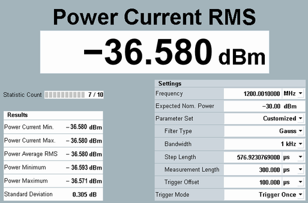

The R&S CMW provides various general purpose and network-specific measurements. All measurements are controlled in an analogous manner. The following example uses the general-purpose RF (GPRF) power measurement.
The GPRF power measurement measures a series of power steps at (possibly) different powers and frequencies and performs a statistical evaluation. As a simple example, we can measure the RF signal generated by the GPRF generator of the R&S CMW. You need a cable suitable to connect two RF ports.
Proceed as follows:
Configure the GPRF generator as described in "Generating an RF Signal".
Connect a coax cable between the RF ports RF 1 COM and RF 2 COM on the front panel of the R&S CMW to feed the generator signal to RF 2 COM.
Enable the "GPRF Measurements" application:
If you operate the GUI via a large screen, the GUI is by default in multiple-window mode.
In the main window, enable the checkbox behind the "General Purpose RF Measurements" entry.
If you operate the GUI via a built-in instrument display, the GUI is in single-window mode.
Press MEASURE to open the "Measurement Controller" dialog and enable the checkbox behind the "General Purpose RF Measurements" entry.
Press the softkey-hotkey combination "RF Settings > RF Routing". Select RF 2 COM as connector.
To start the power measurement, right-click the "Power" softkey and click ON.
In the "Settings" panel of the measurement dialog, adjust the "Frequency", the "Expected Nominal Power", and the filter "Bandwidth" to the properties of your input signal.
Observe the measurement result on the screen.
In the present example, the upper tone (at 1200.001 MHz) of the generated dual-tone signal is observed in a 1 kHz bandwidth. Due to the cable loss, the measured power is a bit smaller than the tone level shown in the generator dialog box.
